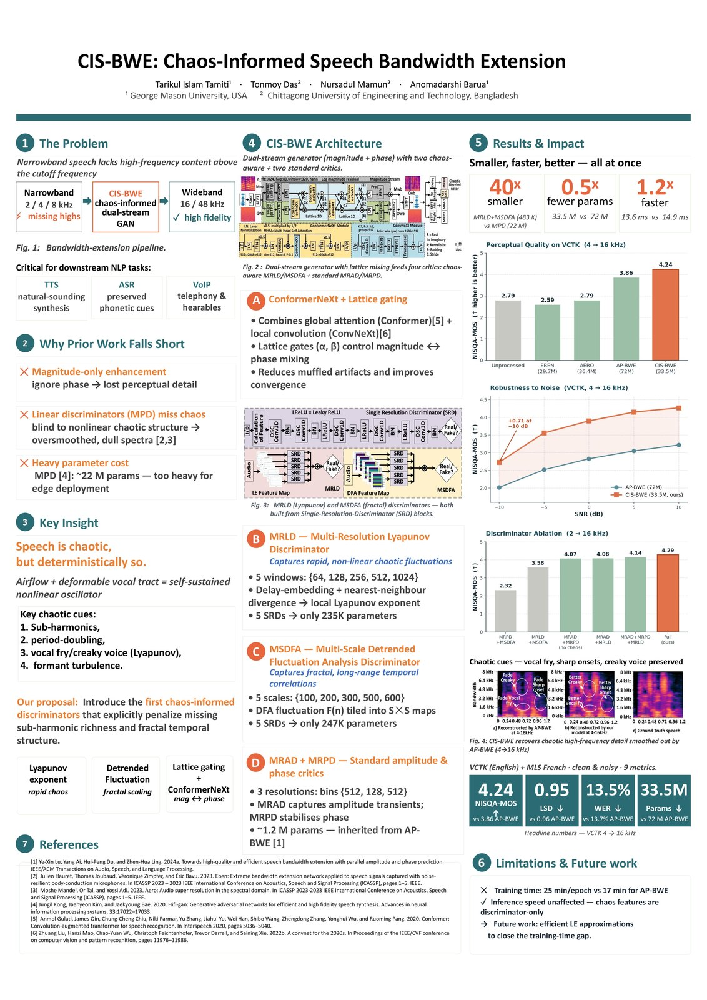
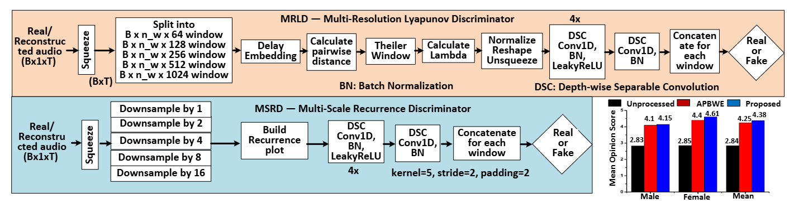
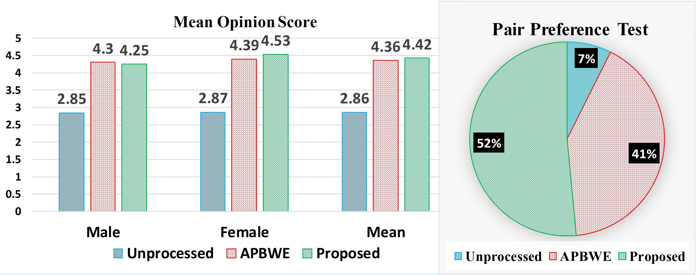

CIS-BWE Explainer
Teaching Speech Models to Hear Chaos
A 15-minute breakdown of our ACL 2026 work, CIS-BWE: Chaos-Informed Speech Bandwidth Extension.

The short version
When speech is compressed, downsampled, transmitted over narrowband channels, or captured through constrained sensors, the high-frequency details are often missing. Those details are not decorative. They carry perceptual cues for clarity, speaker identity, sharp consonants, vocal fry, creaky voice, and other subtle dynamics that make speech sound more natural.
CIS-BWE framework is our attempt to reconstruct those high-frequency missing details more faithfully. The central idea is simple: speech is not only spectral, but it is also deterministically nonlinear. Human speech is produced by airflow interacting with a deformable vocal tract, which creates deterministic chaotic structure. If a model only learns magnitude, phase, or ordinary periodicity, it can still miss the chaotic signatures that make reconstructed speech feel natural.
Why bandwidth extension matters
Speech bandwidth extension asks a model to recover a wideband signal from a narrowband one. A narrowband input may keep enough information for a person to understand the words, but it often removes the high-frequency texture that downstream systems and listeners care about.
That matters for text-to-speech, automatic speech recognition, telephony, hearables, assistive audio, and low-power audio systems. In each case, we want a model that does more than fill empty frequency bins. We want it to restore plausible speech dynamics.
What current methods miss
Most bandwidth extension systems focus heavily on magnitude spectrograms. Some newer approaches also model the phase, which is important because the phase affects waveform realism and perceptual quality. But even magnitude-plus-phase systems can produce speech that is too smooth, too dull, or slightly muffled.
Our diagnosis is that common discriminators are not looking for the right kind of structure. They can judge waveforms, spectrogram slices, amplitudes, and phase patterns, but they do not explicitly ask whether the generated speech contains the nonlinear chaotic behavior of real speech production.
The key idea: speech is chaotic, but not random
Chaos here does not mean noise. It means deterministic systems that are highly sensitive to initial conditions. Speech production has this flavor because vocal folds, airflow, pressure, and the vocal tract interact as a nonlinear dynamical system.
In practice, these dynamics show up in cues such as sub-harmonics, period-doubling, vocal fry, sharp onsets, formant turbulence, and long-range temporal structure. CIS-BWE tries to make a generator care about those cues by giving it adversarial critics that are designed to detect them.
CIS-BWE in one picture
The model has two main parts. First, a dual-stream generator processes magnitude and phase in parallel with Lattice Net style information exchange. Second, four discriminators judge the reconstructed speech: two standard amplitude/phase critics and two new chaos-informed critics.
- MRLD: Multi-Resolution Lyapunov Discriminator, designed to capture rapid nonlinear chaotic fluctuations.
- MSDFA: Multi-Scale Detrended Fluctuation Analysis Discriminator, designed to capture fractal-like long-range temporal correlations.
- MRAD: Multi-Resolution Amplitude Discriminator, used for amplitude transients.
- MRPD: Multi-Resolution Phase Discriminator, used for phase and harmonic-phase relationships.

MRLD: listening for rapid chaos
MRLD uses Lyapunov exponents. A Lyapunov exponent measures how quickly nearby trajectories in a dynamical system diverge. In speech, that gives us a way to ask whether the generated waveform has realistic sensitivity and nonlinear fluctuation patterns.
MRLD slices the waveform into five window sizes: 64, 128, 256, 512, and 1024 samples. For each scale, it computes local Lyapunov-style features and feeds them to lightweight single-resolution discriminator blocks designed with depthwise separable convolutions. The result is a critic that focuses on fast chaotic details without becoming parameter-heavy.
Algorithm 1: Multi-Resolution Lyapunov Discriminator (MRLD)
Input:
x: real or reconstructed waveform
W = {64, 128, 256, 512, 1024}: window sizes
d: delay-embedding dimension
tau: embedding delay
Delta: divergence horizon
Output:
D_MRLD(x): real/fake discriminator score
1. Initialize feature list F = [].
2. For each window size w in W:
2.1 Split x into non-overlapping segments of length w.
2.2 For each segment s:
a. Build delay-embedded vectors y_j = [s_j, s_{j+tau}, ..., s_{j+(d-1)tau}].
b. For each y_j, find its nearest neighbor y'_j outside the Theiler window.
c. Estimate local divergence:
lambda_j = (1 / Delta) * log((||y_{j+Delta} - y'_{j+Delta}|| + eps) /
(||y_j - y'_j|| + eps)).
d. Average lambda_j values to form a Lyapunov feature for segment s.
2.3 Reshape all segment features at scale w into a feature map.
2.4 Append the feature map to F.
3. Normalize and reshape each feature map in F.
4. Feed each resolution map into its single-resolution discriminator block.
5. Concatenate or aggregate the block outputs.
6. Return the final real/fake score D_MRLD(x).
MSDFA: listening for fractal timing
MSDFA uses detrended fluctuation analysis. Instead of looking only at short-term waveform shape, it asks how fluctuations grow across several time scales. That helps capture self-similar structure across syllabic, phonemic, and sub-phonemic regions.
The model computes DFA features at five scales: 100, 200, 300, 500, and 600 samples. Those features become maps that are judged by compact discriminator blocks. This gives the generator feedback about long-range temporal structure, which helps reduce muffled prosody by capturing long-term dependencies.
Algorithm 2: Multi-Scale Detrended Fluctuation Analysis Discriminator (MSDFA)
Input:
x: real or reconstructed waveform
N = {100, 200, 300, 500, 600}: DFA scales
Output:
D_MSDFA(x): real/fake discriminator score
1. Compute the integrated profile Y(k) = sum_{i=1}^{k}(x_i - mean(x)).
2. Initialize feature list F = [].
3. For each scale n in N:
3.1 Split Y into non-overlapping windows of length n.
3.2 For each window:
a. Fit a local trend with least-squares regression.
b. Subtract the trend to obtain detrended residuals.
c. Compute the root-mean-square fluctuation F_n.
3.3 Aggregate F_n values across windows.
3.4 Tile or reshape the scale feature into a fixed-size map.
3.5 Append the map to F.
4. Stack all scale maps into a multi-scale tensor.
5. Feed the tensor through the MSDFA discriminator block.
6. Return the final real/fake score D_MSDFA(x).
The generator: magnitude and phase need to talk
CIS-BWE uses a dual-stream generator because magnitude and phase carry different information. The generator processes both streams, then uses Lattice interactions to let them exchange information through learnable gates. This controlled mixing helps prevent error accumulation and reduces muffled artifacts.
The core block is ConformerNeXt, which combines the global context modeling of Conformer-style attention with the local efficiency of ConvNeXt-style convolution. The generator predicts residual high-frequency information rather than rebuilding the whole spectrum from scratch.
What changed in the results
We evaluated CIS-BWE on English VCTK and French MLS speech, including clean and noisy settings. The evaluation spans objective metrics such as LSD, PESQ, STOI, SI-SDR, SI-SNR, NISQA-MOS, and WER, plus subjective listening tests.
On the VCTK 4 kHz to 16 kHz setup, CIS-BWE reaching 4.24 NISQA-MOS compared with 3.86 for the baseline AP-BWE, 0.95 LSD compared with 0.96, and 13.5 percent WER compared with 13.7 percent. CIS-BWE also reduces overall parameters from 72M to 33.5M and runs faster at inference.
The most important efficiency result is on the discriminator side: MRLD plus MSDFA use about 483K parameters compared with roughly 22M for MPD, a 40x reduction. In other words, the chaos critics are not just more targeted; they are also much smaller making them computationally feasible.

Why this matters beyond one benchmark
Bandwidth extension is often framed as a speech enhancement problem, but it also matters for language systems. If high-frequency details are missing, then text-to-speech can sound flatter, automatic speech recognition can lose phonetic cues, and low-power devices may have to choose between quality and efficiency.
CIS-BWE points toward a broader design pattern: if the signal comes from a nonlinear physical process, the learning system should not only match surface statistics. It should also be encouraged to match the dynamics that produced the signal.
Limitations
The chaos features improve the training signal, but Lyapunov estimation adds training overhead. Inference speed is not affected because the chaos features are discriminator-only, but future work should explore more efficient and faster approximations for chaos-aware training.
We also want to test whether the same idea helps related speech tasks such as text-to-speech, automatic speech recognition, and sensor-based audio reconstruction.